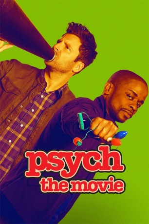

#8719 Psych - The Movie
 
 IMDB-Wertung: 7.6 / 10
IMDB-Wertung: 7.6 / 10  Metascore: 0
Metascore: 0 
Psych: The Movie, ist der Film zur gleichnamigen Serie. Shawn Spencer (James Roday)und Burton Guster (Dulé Hill) führt es nach San Francisco, wo sie eine neue Detektei mit dem schönen Namen „Psychphrancisco“ eröffnen. Doch das Leben wird ihnen nicht leicht gemacht, denn der mysteriöser Bösewicht Thin White Duke (Zachary Levi), hat es auf einen von ihnen abgesehen...
Jahr: 2017
Dauer: 88 Minuten
FSK:
Land: USA Studio: USA NetworkTonspuren: DD5.1 - ,
Untertitel: Englisch,
Auflösung: 1080p (1920x1080) Größe: 6481 MB
Genre: Komödie, Krimi, Mystery
Regisseur: Jay Martin
Drehbuch: Allen Wolf
Soundtrack: Adam Cohen, John Robert Wood
Darsteller:
Datei: X:\2017(N-Z)\Psych - The Movie (2017, FSK, 1920x1080).mkv seit 25.04.2018
Festplatte: HD 2017(A-Z)-2018(A-F)
 Es gibt insgesamt 170 Filme in der Gruppe '2017(N-Z)'
Es gibt insgesamt 170 Filme in der Gruppe '2017(N-Z)'